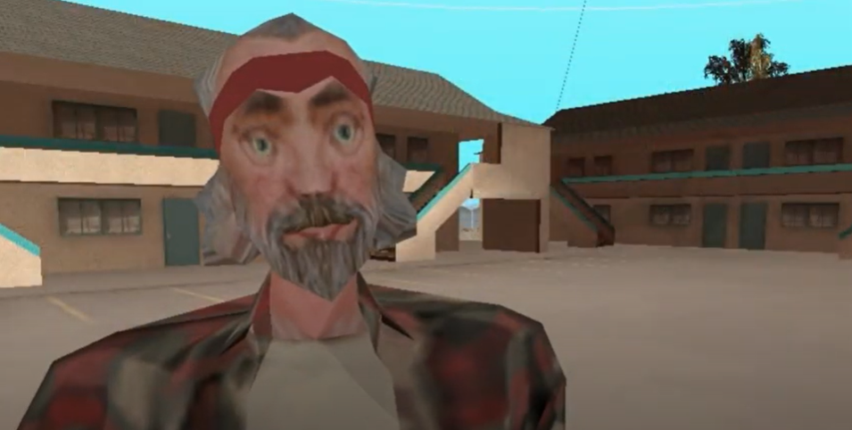
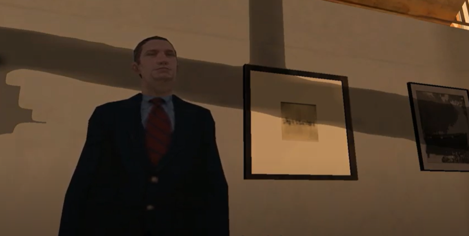
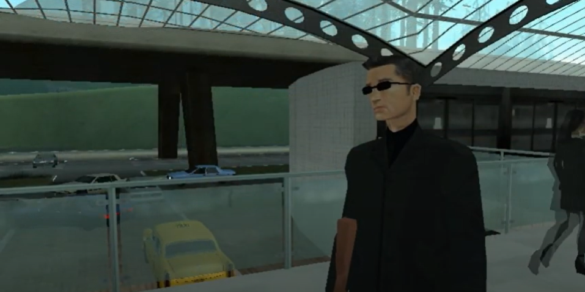
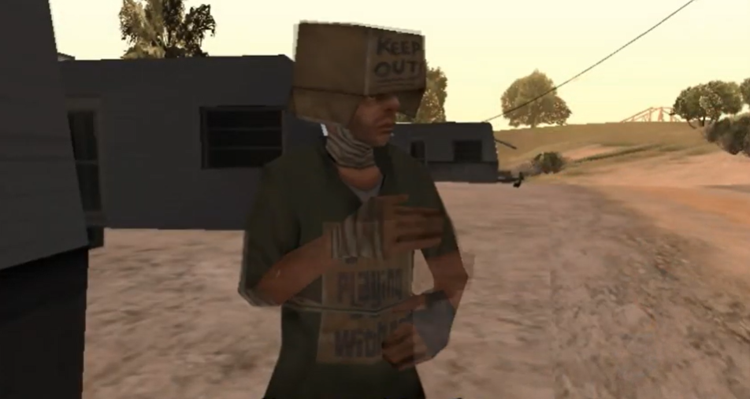

A Resistência

Truth
Ele é o líder da resistência e tenta trazer a paz para San Andreas com manobras políticas para acabar com a MIB.
Dublador: Lucas KZ
Strange Caller
Ninguém sabe quem ele é. Dizem que ele começou na Resistência e, então, saiu para seguir seu próprio caminho para destruir a MIB.
Dublador: ?
Yomi
Ela é uma ninja que sempre está atrapalhando todos os planos da MIB. Por que ela faz isso?
Dublador: Isa Meiyo

Toreno
Ele trabalha para o governo de San Andreas e às vezes ajuda a Resistência em planos para atrapalhar a MIB.
Dublador: Kaique

Woozie (Wu Zi Mu)
Membro da Resistência que está tentando atrapalhar o plano da MIB de capturar o Mutante Maldito.
Dublador: Jun

Mendigo
Membro da Resistência, ele foi designado para a missão quase suicida de Las Barrancas.
Dublador: Taíná